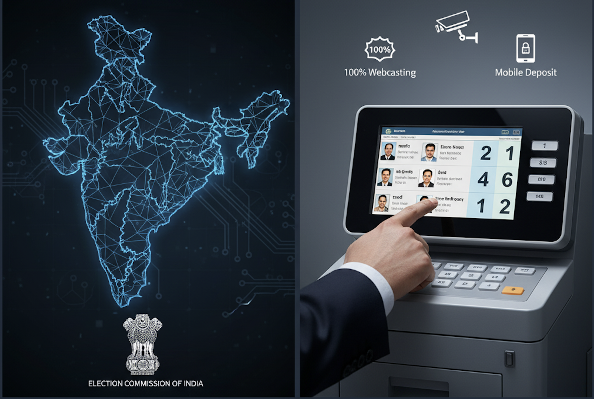

बिहार चुनावों में 17 नए सुधार: एक 'ट्रायल' जो जल्द ही देशव्यापी होगा लागू! 🇮🇳
Published on October 5, 2025 | By Daily_Update
क्या आप Ready हैं? Bihar Elections में इस बार सब कुछ बदलने वाला है! 🔥 CEC **Gyanesh Kumar** ने 17 ऐसे **Mega Reforms** का ऐलान किया है जो **Digital India** के लिए एक **Game Changer** साबित होंगे। **EVM पर आपकी रंगीन फोटो** से लेकर **100% Webcasting** तक—ये बदलाव सिर्फ बिहार का नहीं, बल्कि **पूरे देश की Voting** को Modern बना देंगे। आइए, जानते हैं कि **आपके लिए** इन 17 पहलों में क्या ख़ास है।
CEC **Gyanesh Kumar** ने बिहार विधानसभा चुनावों से पहले इन **17 new initiatives** को लागू करने का ऐलान किया है। इन कदमों का मुख्य मक़सद **Chunav Process (Electoral Process)** को और ज़्यादा **साफ-सुथरा (Transparent)**, **आसान (Accessible)**, और **Advance (Modern)** बनाना है। CEC कुमार ने साफ कहा है कि इन नई पहलों को **nationwide model** के तौर पर अपनाया जाएगा।
CEC कुमार के मुताबिक, "**17 नए Reforms** बिहार में सफलतापूर्वक Implement किए गए हैं। इनमें से कुछ **Voting** के दौरान, और कुछ **Counting** के दौरान इस्तेमाल होंगे।" बिहार विधानसभा का कार्यकाल **22 नवंबर, 2025** को समाप्त हो रहा है, और उससे पहले ही चुनाव पूरे करा लिए जाएंगे।
Key 7 Game-Changing Reforms (7 मुख्य बदलाव जो आपका वोटिंग अनुभव बदल देंगे)
इन 17 पहलों में से ये हैं **7 सबसे ज़रूरी और महत्वपूर्ण सुधार**:
- **बूथ पर भीड़ कम:** बिहार पहला राज्य बन गया है जहाँ हर Polling Booth पर **1,200 से कम मतदाता (Voters)** होंगे। इससे **12,817 नए पोलिंग स्टेशन** बने हैं, ताकि आपको **लंबी लाइन में (Queue Length)** न लगना पड़े और **इंतज़ार का समय (Wait Time)** कम हो।
- **EVM पर अपनी पहचान:** EVM Ballot पर अब उम्मीदवारों की **colour photographs (रंगीन तस्वीरें)** और **बड़े Serial Numbers** होंगे। इससे मतदाताओं को सही candidate को पहचानने में **ज़्यादा आसानी** होगी।
- **100% वेबकास्टिंग:** चुनाव में **पूरी पारदर्शिता** लाने के लिए, बिहार के **सभी Polling Booths** पर **complete webcasting coverage** की जाएगी। यानी, हर चीज़ पर **Digital Eye** रहेगी।
- **मोबाइल फ़ोन बाहर जमा:** वोटर्स को अब Polling Booth के बाहर एक सुरक्षित **mobile deposit facility** में अपना मोबाइल जमा करना **अनिवार्य** होगा। यह कदम बूथ के अंदर **गोपनीयता और शांति** बनाए रखने के लिए है।
- **बूथ अधिकारियों की पहचान:** बूथ-स्तर के अधिकारियों (Booth Officials) को अब **official ID cards** दिए जाएंगे, जिससे उनकी पहचान **तुरंत और स्पष्ट** हो जाएगी।
- **Voter ID जल्दी मिलेगी:** एक नया **Standard Operating Procedure (SOP)** यह सुनिश्चित करेगा कि **Voter Registration** के **सिर्फ 15 दिनों के भीतर** ही आपको अपना **EPIC (Voter ID Card)** मिल जाए।
- **वोट गिनती के नए नियम:** Counting Process को स्पष्ट करते हुए CEC ने कहा कि यदि Form 17C और EVM counting unit में कोई **फर्क (discrepancy)** होता है, तो प्रभावित **VVPATs की full recount** की जाएगी। साथ ही, **postal ballots** की गिनती EVM counting के **अंतिम दो rounds** से पहले **ज़रूरी** होगी।
आगे क्या? (What Next for Indian Democracy)
CEC **Gyanesh Kumar** ने सभी मतदाताओं और बूथ-लेवल अधिकारियों को **Special Intensive Revision (SIR) of electoral rolls** की सफल समाप्ति पर बधाई दी। उन्होंने बिहार के लोगों से अपील की कि वे इस **"लोकतंत्र के त्यौहार (democracy festival)"** को छठ पूजा की तरह ही उत्साह के साथ मनाएं और **बढ़-चढ़कर Voting करें**।
Political parties ने भी EC से **छठ पर्व के तुरंत बाद** चुनाव कराने का आग्रह किया है। EC के ये **17 reforms** भारतीय चुनावी प्रक्रिया को एक **नया और मॉडर्न** आयाम देने की ओर पहला बड़ा कदम हैं, जो जल्द ही पूरे देश में लागू होंगे।
इस लेख को शेयर करें: